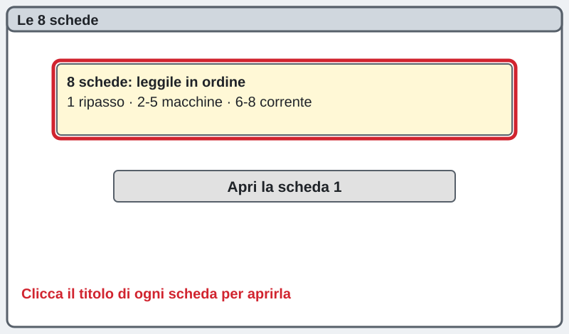
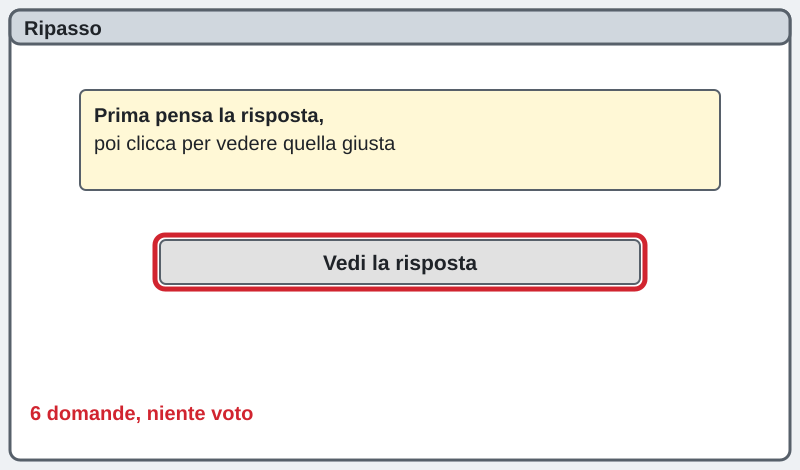
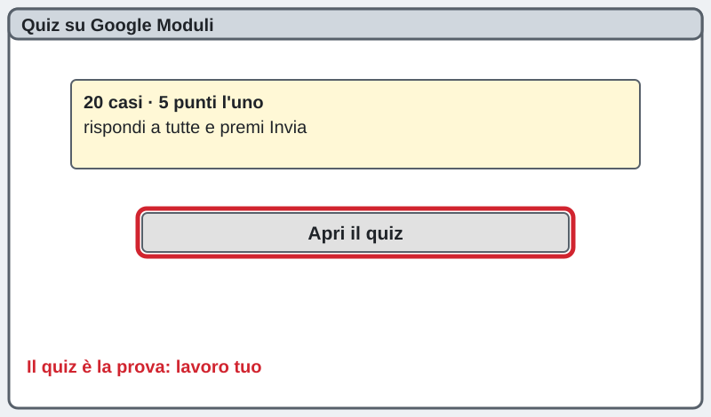
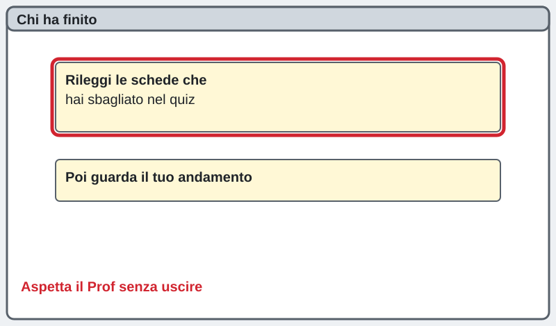

2INF · Sicurezza · mercoledì 04/11/2026 · formazione specifica, 6ª ora
Sicurezza sul lavoro · 6ª ora: macchine e corrente
La pagina viene aggiornata spesso durante la lezione: premi F5 per vedere la versione nuova.
Chi sei?
Scrivi nome e cognome: serve al cruscotto per vedere a che punto sei.
Sei bloccato? Scrivi la domanda nella casella dell'assistente in fondo alla pagina: ti risponde subito. Alza la mano solo se il PC non funziona (non si accende, niente rete, Lazarus non si apre).
1Leggi le 8 schede
Clicca il titolo di ogni scheda e leggila. Quando hai letto tutte e 8, premi «Ho fatto!». Non serve correre: il quiz viene dopo.
1. Ripasso in un minuto (5ª ora)
Infortunio: un evento improvviso che ti fa male mentre lavori. Quasi infortunio: poteva farti male ma non è successo (si segnala sempre). In itinere: sulla strada da casa al lavoro. INAIL: l'assicurazione degli infortuni, la paga il datore di lavoro.
2. Che cos'è un rischio meccanico
Il rischio meccanico nasce dalle parti di una macchina che si muovono: ingranaggi, cinghie, lame, rulli, pistoni. Succede anche vicino a noi: le ventole di un PC, le stampanti, le porte automatiche, i carrelli.
3. Come ci si fa male con le macchine
Schiacciamento: resti stretto tra due parti che si avvicinano. Taglio: una lama ti taglia. Trascinamento e impigliamento: sciarpe, cravatte, braccialetti e capelli lunghi finiscono dentro. Cesoiamento: due parti si incrociano come le forbici. Proiezione: schegge e pezzi che volano via.
4. Le protezioni delle macchine
Riparo fisso: una protezione avvitata che non si toglie. Riparo con interblocco: se lo apri la macchina si ferma. Sensori (per esempio le fotocellule): fermano la macchina se passi. Pulsante di emergenza: il fungo rosso, ferma subito tutto. Mai togliere o bloccare una protezione.
5. Prima di pulire o riparare
1. Fermo la macchina. 2. Stacco l'energia (corrente o aria compressa). 3. Metto il cartello «Non azionare, lavori in corso» sull'interruttore. 4. Controllo che sia davvero ferma. Solo dopo ci metto le mani. Se la protezione è rotta, non uso la macchina e avviso il preposto.
6. Il rischio elettrico
Contatto diretto: tocchi una parte che è normalmente in tensione, per esempio un filo scoperto. Contatto indiretto: tocchi una parte che di solito non è in tensione ma lo è diventata per un guasto, per esempio la carcassa di un apparecchio. La corrente delle prese (230 volt) è pericolosa.
7. Che cosa fa la corrente al corpo
Dipende da quanta corrente passa, per quanto tempo e da dove passa (mano-mano o mano-piede è peggio perché attraversa il cuore). Può far contrarre i muscoli (non riesci a staccarti), fare ustioni e fermare il cuore. Le mani bagnate o l'acqua aumentano molto il rischio.
8. Come ci si protegge e che cosa si fa se succede
Isolamento dei cavi, messa a terra, salvavita (interruttore differenziale). Non uso cavi rovinati, non attacco ciabatte una all'altra, non tocco prese con le mani bagnate. Se succede: tolgo la corrente (interruttore o spina) senza toccare il collega, chiamo il 112, avviso il preposto.

2Ripasso: 6 domande
Pensa la risposta, poi clicca la domanda per vedere quella giusta. Non conta per il voto: serve per prepararti.
Che cos'è un rischio meccanico?
Il rischio che nasce dalle parti di una macchina che si muovono.
Perché sciarpe e cravatte sono pericolose vicino a una macchina che gira?
Si impigliano e trascinano la mano o il corpo.
A che serve il riparo con interblocco?
Se lo apri, la macchina si ferma.
Prima di riparare una macchina che cosa fai?
La fermo, stacco l'energia, metto il cartello e controllo che sia ferma.
Che differenza c'è tra contatto diretto e indiretto?
Diretto: tocchi una parte in tensione (filo scoperto). Indiretto: tocchi una parte diventata in tensione per un guasto (carcassa).
Un collega è attaccato a un cavo elettrico. Che cosa fai?
Tolgo la corrente senza toccarlo e chiamo il 112.

3Il quiz su Google Moduli
Premi il bottone verde: sono 20 casi, 5 punti l'uno, massimo 100. Rispondi a tutti e premi Invia. Il quiz è la tua prova: lavoro tuo, senza aiuto dei compagni.
Apri il quiz di sicurezza
4Hai finito prima degli altri?
Rileggi le schede delle domande che hai sbagliato. Poi aspetta il Prof senza uscire dall'aula.

La pagina viene aggiornata spesso durante la lezione: premi F5 per vedere la versione nuova.